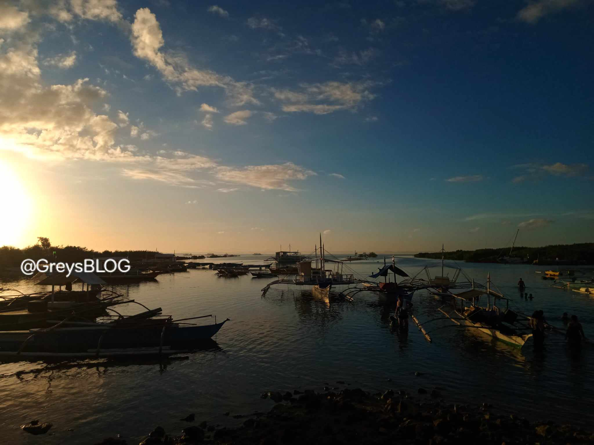

BANTAYAN BAY

BANTAYAN BAY
BANTAYAN BAY
Bantaya bay: Our Home Nature
In Cordova, Philippines, Bantayan Bay is a special place full of colorful reefs and fish,
is also a perfect chill spot with awesome views.
People fish here for jobs and food but the problem is there's too much fishing and trash in the water.
Some people are fixing this. They're teaching better fishing and cleaning up the bay. This helps keep our home beautiful and the fish happy